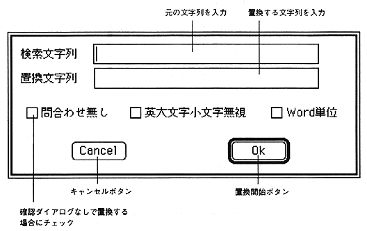
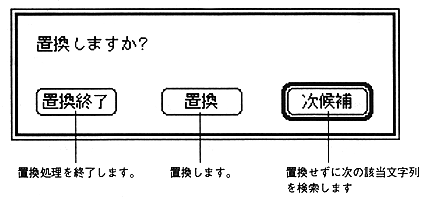

This function searches for an arbitrary character string in the active text window and replaces it with the specified character string. When necessary items are set in the dialog, the character string is searched, and if it exists, the character string is replaced. If you do not check No inquiry, a confirmation dialog will appear once. Other check boxes are the same as search.

If you do not check No inquiry, a replacement confirmation dialog like the one below will be displayed and you will be asked to confirm the replacement.
